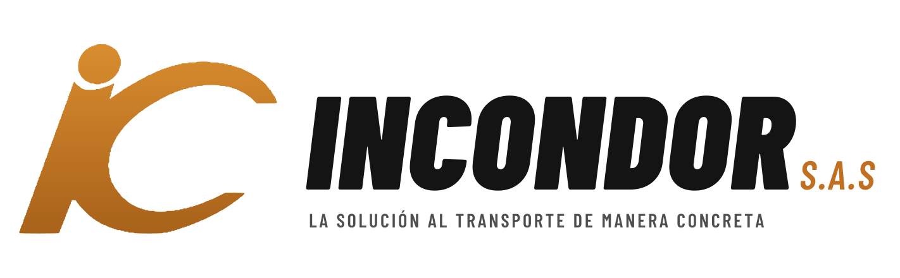
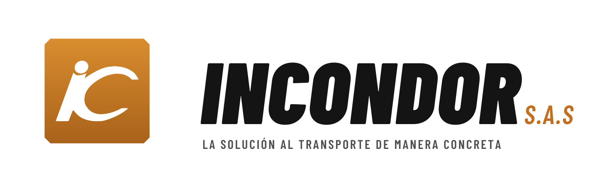
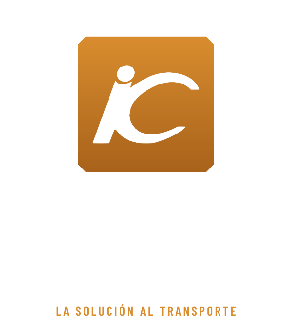
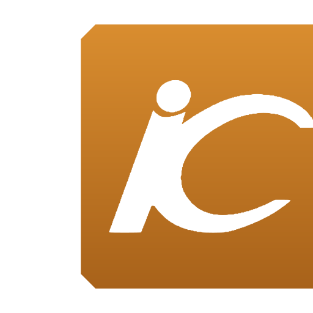

El mismo IC,
más fuerte
Esta versión parte de la marca que ya tiene Incondor en incondor.com: el monograma IC en cobre, las letras negras en itálica y el lema “La solución al transporte de manera concreta”. Redibujé el IC original en vector limpio, sin el contorno blanco ni la sombra pixelada. Para el nombre usé una tipografía itálica pesada que transmite movimiento y carga.

V1 · IC limpio
El IC original en degradado cobre, plano y sin efectos. Es el más versátil.

V2 · IC con relieve
Conserva la sombra negra del logo actual, pero desplazada y nítida. Es el más fiel al original.

V3 · Placa de flota
El IC en blanco dentro de una placa cobre con esquinas recortadas, como una placa de vehículo. Sirve para las puertas de las volquetas, la foto de perfil y el ícono de la app.



Así se ve en la web
La solución al transporte de manera concreta
Favicon
V1 como logo principal + V3 para la flota
V1 mantiene el IC que los clientes ya reconocen y se ve moderno, tanto en la web oscura como en papelería blanca. V3 sirve para lo que tiene que leerse de lejos o en tamaño pequeño: puertas de volquetas, favicon y perfil de redes. Es la misma marca en dos formatos.
V2 es la opción si la gerencia quiere el cambio mínimo frente al logo actual.